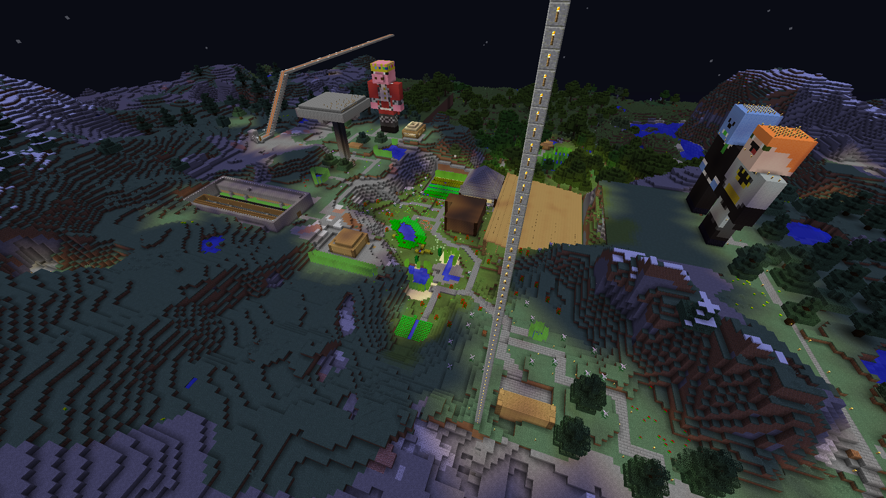
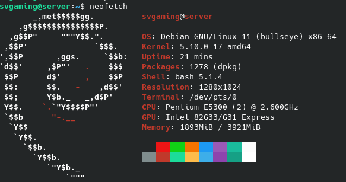
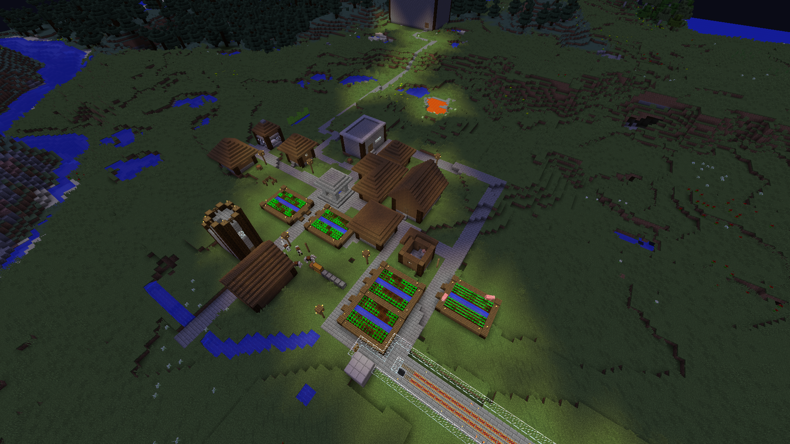
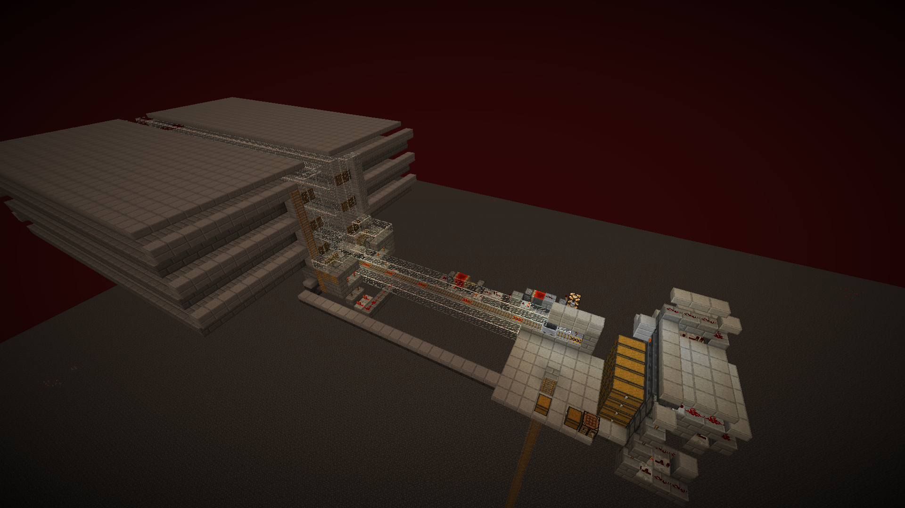

SvGaming's SMP
Back
IP: like-freeze.at.playit.gg:42125 (I route the server through playit so no one can get my public IP)
Version: 1.8.8 / 1.8.9
SvGaming's SMP is my SMP Minecraft server.

Why should I join?
Everyone can join!
New players are always invited. Anyone with a Minecraft Java 1.8.9 installation can join.
In the server configuration file online-mode is set to false. This means the server is "cracked".
Don't worry! No one can log in as your usename. The server is protected using a password plugin.
Self hosting

I host the server on an old laptop using Debian Linux. Don't worry, the TPS is fine!
Friendly and helpful community
Need help? Most people on the server are super helpful and friendly.
No griefing
The server is strongly protected against griefing using password and grief prevention plugins.
Server screenshots
Spawn
Renovated village

Nether AFK XP Farm

Back